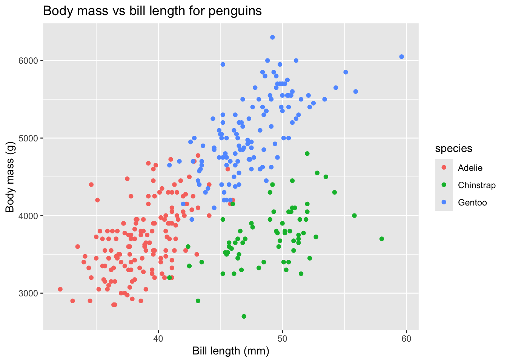

The goal is to have effective solutions that don’t introduce a lot of new friction for the workshop developer. In general, each of our workshops are developed using one of three tools: bookdown or quarto for R-centric workshops, and Jupyter Book for Python-centric workshops. It has been dealer’s choice which of these to use for workshops that are not specifically about either R or Python. Nick prefers that we gravitate toward Jupyter Book for most workshops. This presentation was developed as part of a project to improve the accessibility of R Basics, which is an R workshop written in quarto. Some of these solutions, therefore, will have to be revisited for the design of the workshops written in Jupyter Book.
5.1 Recommended
5.1.1 Add Alt Text to Images
This is an obvious necessity for accessibility. Unfortunately, the quarto deveopers ignored the markdown standard that says an image should be written in markdown as . Instead, quarto interprets the text in the square brackets as the image caption, and to add alt text you have to tag the image with the fig-alt attribute in curly brackets after the closing parenthesis. For example, the following image of a goose, when rendered in quarto, has the caption “Goose” and the alt text “Greylag goose in profile.”: {fig-alt='Greylag goose in profile.}
Goose
5.1.2 Add Alt Text to Plots
The above works fine for static images that you display via the markdown image syntax . However, when you dynamically generate a plot in an R code block it isn’t written in mardown syntax so the way to write alt text is different. In that case, you need to write the alt text as the fig-alt chunk option and the caption as the fig-cap chunk option. Here’s an example that uses ggplot2 to plot data from the palmerpenguins R package:
library(ggplot2)library(palmerpenguins)data(penguins)ggplot(penguins) +aes(x=bill_length_mm, y=body_mass_g, color=species) +geom_point() +xlab("Bill length (mm)") +ylab("Body mass (g)") +ggtitle("Body mass vs bill length for penguins")
Warning: Removed 2 rows containing missing values or values outside the scale range
(`geom_point()`).

Scatterplot of body mass vs bill length for penguins of three species.
Putting the plot’s title in the caption (“Scatterplot of body mass vs bill length for penguins of three species.”) rather than in the plot’s “title” element (“Body mass vs bill length for penguins”) is better for accessibility because the screen reader can read the former but not the latter.
5.1.3 Use gt Package For Tables
As noted in Section @section-tables, the default output for R tables is to print them to the output as raw text. The R package gt offers the function gt() to format tabular data for HTML.
library(gt)gt(head(penguins))
species
island
bill_length_mm
bill_depth_mm
flipper_length_mm
body_mass_g
sex
year
Adelie
Torgersen
39.1
18.7
181
3750
male
2007
Adelie
Torgersen
39.5
17.4
186
3800
female
2007
Adelie
Torgersen
40.3
18.0
195
3250
female
2007
Adelie
Torgersen
NA
NA
NA
NA
NA
2007
Adelie
Torgersen
36.7
19.3
193
3450
female
2007
Adelie
Torgersen
39.3
20.6
190
3650
male
2007
First six rows of data from the penguins data frame.
5.1.4 Navigation
After doing a deep dive into Quarto, it looks like we will have a very hard time trying to give more meaningful names to the three navigation sections on the page. One of them is relatively simple: the definition of the Table of Contents, which provides links to navigate within the current page can be overridden by putting a file called toc.html in the list template-partials under the html format in the _quarto.yml file.
Unfortunately, the other two nav sections are generated by embedded javascript (EJS) templates, rather than the more basic pandoc template that defines TOC. EJS templates can’t be overridden in the ite render process so the only way to change the sidebar and footer nav sections would be to replace the default template .pixi/envs/default/share/quarto/projects/website/templates/nav-after-body-postamble.ejs within Quarto’s file hierarchy, since that template is hard-coded into the site rendering process. This solution is not very robust because it would be wiped out any time someone installs or upgrades Quarto.